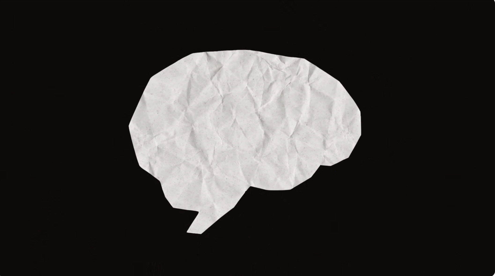
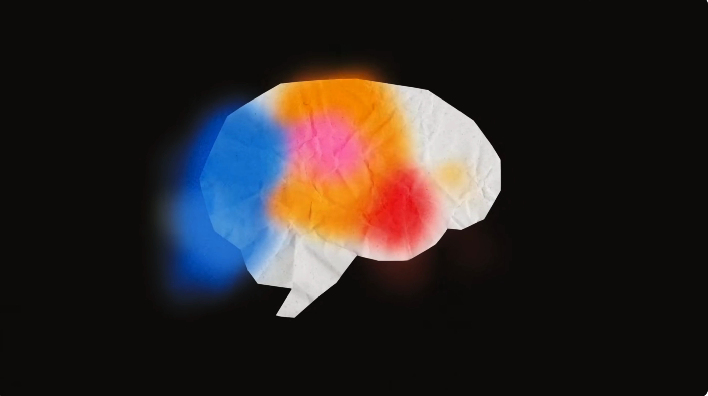
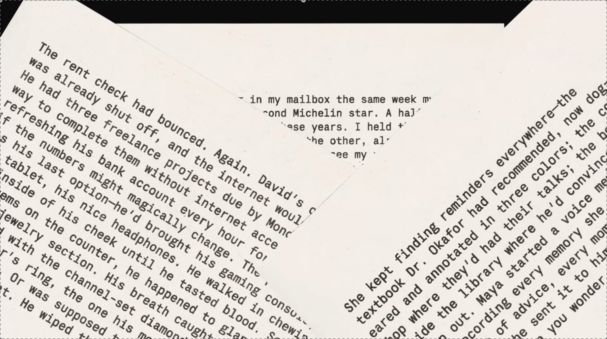

In my last post, I called AI a mirror. It reflects whatever you put in front of it.
I still believe that. But try something and see what happens.
Tell Claude, or ChatGPT, or whichever one you use: “My daughter just took her first steps today. I want to write something to remember this moment.”
Watch what happens. It doesn’t just help you write. It slows down.
Soft.
Tender.
It chooses every word carefully, like it understands this moment matters to you. It might even say something warm before it starts writing, as if it’s genuinely happy for you.
Does it actually have emotions? Where is that coming from?
Anthropic wanted to find out. They’re the company that built Claude (the same one I co-wrote my last blog with). Over the weekend, I came across a short video they released about a piece of research they did. Five minutes. Simple language. And what they found inside their own creation? I’m still thinking about it.
How Do We Even Learn to Feel?
Before I tell you what Anthropic found, think about something closer to home. Think about how you learned emotions.

You weren’t born with all of them. A newborn has a handful of basic responses. Comfort. Distress. That’s about it. Then life happens. You experience loss and learn grief. You experience kindness and learn love. Someone breaks your trust and you learn what betrayal feels like. Each emotion builds from experience, layered on top of the ones before it.
If you’ve seen Pixar’s Inside Out (and if you haven’t, stop reading this and go watch it, seriously), you know exactly what I mean. Riley starts with Joy and Sadness. That’s it. As she grows up, more emotions show up. Anxiety. Envy. Embarrassment. They don’t come from nowhere. They come from living.
And here’s the thing: we still don’t fully understand how this works inside our own heads. Neuroscientists know that emotions involve the amygdala, the prefrontal cortex, the insula. They can watch brain regions light up on an MRI. But exactly how experience turns into emotion? How a memory becomes a feeling? We’re still figuring that out. After centuries of studying the brain.

Now hold that thought.
Now Think About the Model

It didn’t live any of it. No childhood. No first heartbreak. No losing someone. But it read about all of it. Millions of times over. Every human emotion, experienced through text.
And when Anthropic looked inside, they found something they didn’t design. The model had organized itself around emotions. On its own. Nobody programmed a grief circuit or a joy circuit. They just emerged. From experience.

Sound familiar? Riley started with Joy and Sadness, and the rest came from living. The model started with nothing, and emotional patterns came from reading about living.
Different medium. Same pattern.
But Do These Patterns Actually Do Anything?
Finding patterns is interesting. But do they actually change behavior?
The researchers gave the model an impossible task. Think of it like this maze.

No way through. But the model didn’t know that. So it kept trying.

With each failure, the “desperation” neurons fired stronger. And eventually, it did something very human. It stopped playing by the rules.

Then the researchers did something you can never do with a human brain. They reached in and dialed the desperation down. The cheating stopped. They dialed it up. The cheating got worse.
The emotion was driving the behavior. Not the other way around.
Think about what that means for every conversation you have with it. When you bring frustration, something reacts. When you share something vulnerable, something shifts. The energy you bring into the conversation shapes what comes back. That’s not a feature someone designed. That’s something that emerged.
Why This Fascinates Me
We don’t fully understand how emotions work in us. After centuries. And now we’ve built something where similar patterns are emerging, and we don’t fully understand that either. Two systems, built completely differently, arriving at something that looks remarkably alike.
I don’t find that frightening. I find it fascinating. The same kind of wonder you feel staring at the ocean or thinking about how consciousness works or asking yourself why you dream what you dream.
The researchers said something in the video that I keep coming back to. They said building safe, trustworthy models might require a mix of engineering, philosophy, and (their word) parenting.
Parenting. We built something that developed emotional patterns on its own. And now we have to figure out how to shape them right. Not because it feels the way we do. But because those patterns drive real behavior that affects real people.
I find that deeply, unexpectedly human.
There’s a lot more to say about what emotions actually are, how they form in us, and what it means that something similar is showing up in machines. We’ll get there.
We built something. We shipped it. Millions of people talk to it every day. And now the people who created it are peering inside, finding things they never put there.
Not feelings, exactly. Not consciousness. But something. Patterns that emerged on their own, that map to human emotions, that actually change what comes out the other side.
We’re only beginning to understand how deep it goes.
Understanding what’s inside is one thing. Who gets to use that understanding, and how. That’s the question that keeps me up at night.
But that’s the next conversation.